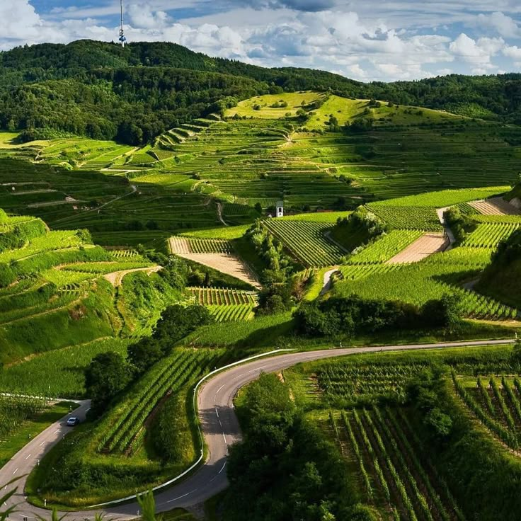
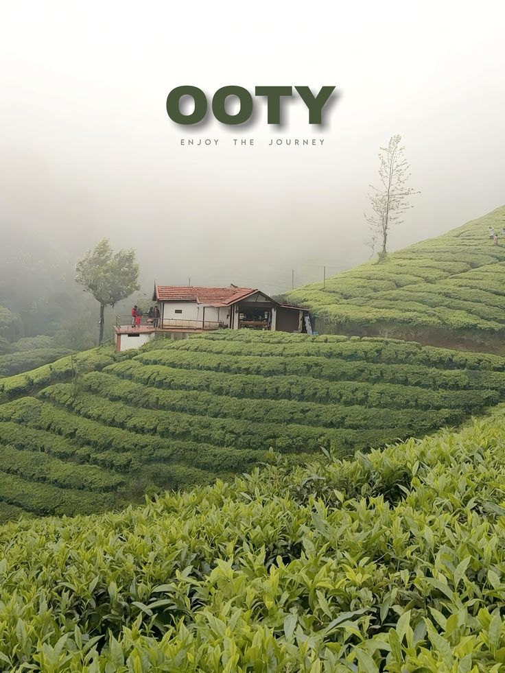
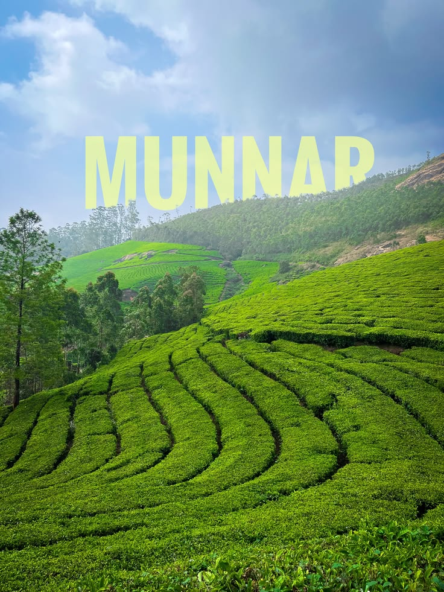

Kerala, known as "God's Own Country," offers an atmosphere of tranquility and natural beauty. The emerald backwaters of Alleppey, traditional houseboats, and mist-covered tea plantations of Munnar create unforgettable scenery. Waterfalls like Athirappilly and Meenmutty showcase nature’s power, while the Western Ghats provide a stunning green backdrop of forests and hills.



